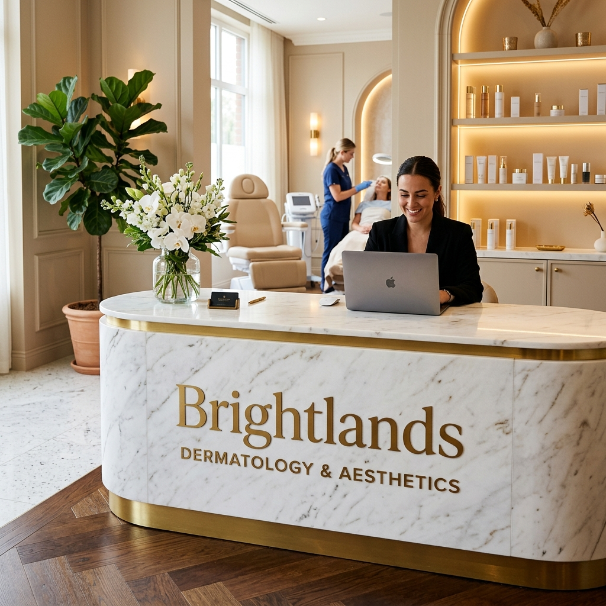
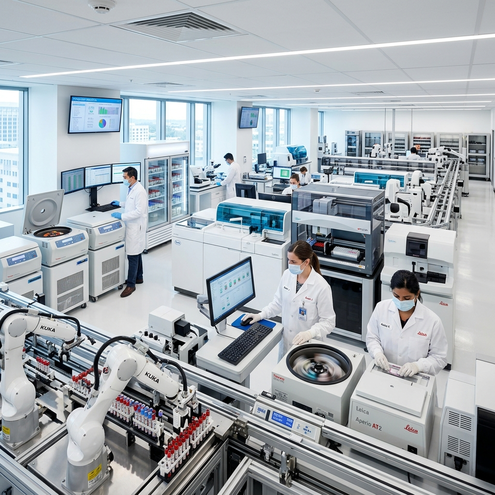

Connecting you to specialized healthcare platforms with world-class technology and dedicated expert care.
Brightlands is a next-generation healthcare ecosystem integrating Dermatology, Teleradiology and Diagnostics, designed specifically for international scalability and cross-border delivery.
Our model combines:
Our vision is to build a globally trusted healthcare network originating from India and expanding through strong regional collaborations.
Specialist
Doctors
Expert Staff and
management
Successful
cases
Happy
Patients
The premium dermatology and aesthetic division of Brightlands, delivering personalised, result-orientated clinical care through evidence-based dermatology and the latest in aesthetic science.
Explore Now
Unirad Tele Radiology Solutions provides reliable remote radiology reporting for hospitals and diagnostic centers. With expert radiologists and 24/7 support, they deliver accurate reporting for X-Ray, CT, MRI, and other imaging services.
Explore NowBrightlands Diagnostics delivers accurate and reliable diagnostic solutions with advanced imaging technology and expert medical support. From routine health screenings to specialized diagnostic services, they focus on fast reporting, precision, and patient-centered care to support better healthcare outcomes.
Explore Now
Brightlands is expanding rapidly across borders. We are looking for passionate healthcare professionals, innovators, and leaders to join our mission of delivering excellence in global healthcare.
Latest updates from the world of modern medicine and digital healthcare.
 Wellness
Wellness
Expert tips from our top dermatologists on maintaining healthy, glowing skin year-round.
 Technology
Technology
How artificial intelligence is revolutionizing the way we detect and treat diseases early.
 Global Health
Global Health
The role of teleradiology in providing world-class diagnostics to remote areas globally.
Have questions? Our team is here to help you.